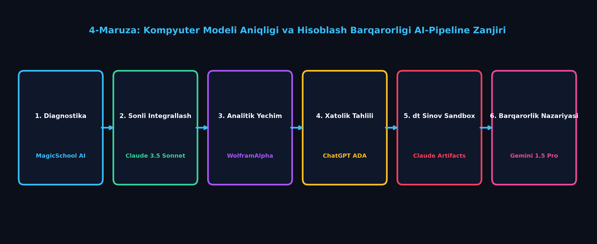
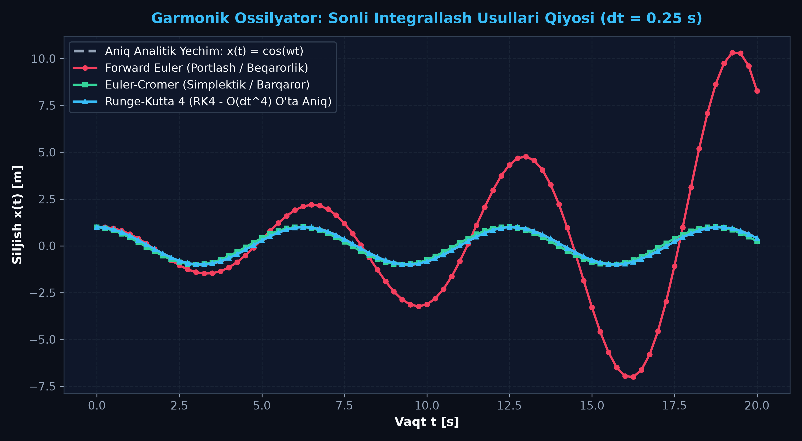
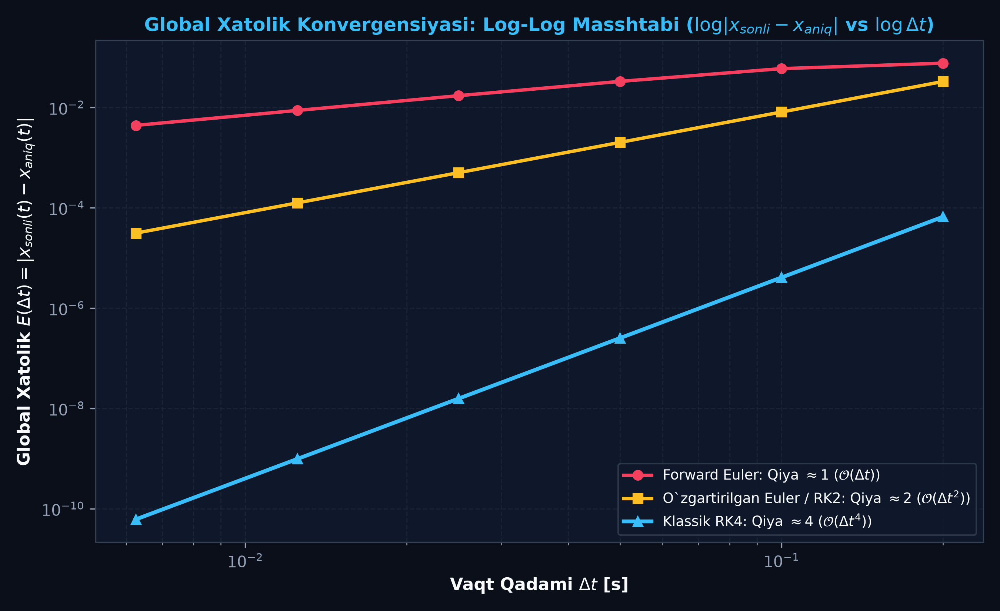
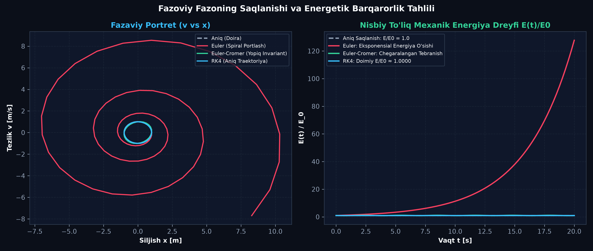

Zamonaviy Kompyuter Modeliga
Qo‘yiladigan Talablar va Hisoblash Aniqligi
Fizik kompyuter modellarining uch fundamental mezoni — Aniqlik (Accuracy), Barqarorlik (Numerical Stability) va Hisoblash Tezligi (Efficiency) o'rganiladi. Forward Euler, Euler-Cromer, Heun (RK2) va Klassik Runge-Kutta 4 (RK4) usullarining xatolik darajalari, Teylor qatori kesish xatosi (LTE vs GTE) hamda integratsiya qadami ($\Delta t$) ning animatsiya sifatiga ta'siri matematik va interaktiv tarzda tahlil qilinadi.
📋 Ma'ruza Rejasi va AI Integratsiyasi Bosqichlari:
MagicSchool AI orqali talabaning differensial modellar va sonli usullar bo'yicha tayyorgarligini testlash.
Claude 3.5 Sonnet yordamida Forward Euler, Heun va RK4 diskretlash qadamlarini annotatsiya bilan keltirib chiqarish.
WolframAlpha yordamida Koshi masalasining aniq analitik yechimini topish va $L_2$ xatolik normasini o'rnatish.
ChatGPT Advanced Data Analysis orqali $\log(E)$ vs $\log(\Delta t)$ Log-Log konvergensiya egri chiziqlarini qurish.
Claude 3.5 Sonnet Artifacts asosidagi 4-kamerali interaktiv fizik simulyator va telemetriya sandboxingi.
Gemini 1.5 Pro orqali Fon Neyman (von Neumann) spektral tahlili va simplektik fazaviy hajm saqlanishini isbotlash.
🔬 4-Mavzu Bo'yicha Ilmiy AI-Pipeline Konveyeri:

MagicSchool AI Bilan Talaba Tayyorgarligini Baholash
Fizik modellashtirishda sonli integrallash usullarini tanlashdan oldin, talabaning differensial tenglamalar, Koshi masalasi va diskretlash qadami tushunchalari bo'yicha bazaviy bilimlari diagnostika qilinadi.
🤖 MagicSchool AI Diagnostic Prompt Namunasi:
Rol: Fizika va hisoblash matematikasi bo'yicha oliy toifali dotsent. Vazifa: 3-kurs fizika talabalari uchun "Oddiy differensial tenglamalarni sonli integrallash va hisoblash xatolari" mavzusida 3 darajali diagnostik test va individual o'quv traektoriyasi tuzib ber. Format: 1. Bazaviy daraja: Teylor qatori va 1-tartibli Eyler usuli diskretlash qadami. 2. O'rta daraja: Konservativ tebranishlarda energiyaning sun'iy dreyfi va faza xatosi. 3. Ilg'or daraja: Runge-Kutta 4 usulining oraliq qiyaliklari (k1..k4) va simplektik integratsiya mohiyati. Chiqish formati: Har bir xato javob uchun individual metodik yo'llanma berilsin.
🎯 Diagnostika Maqsadlari:
- Talabaning analitik integrallash bilan sonli diskretlash farqini bilishi;
- Lokal kesish xatosi ($\text{LTE} \propto \Delta t^2$) va global xato ($\text{GTE} \propto \Delta t$) ni ajrata olishi;
- Kompyuter animatsiyasida $\Delta t$ ning 60 FPS kadrlar chastotasi bilan bog'liqligini tushunishi.
📈 Individual Rejalashtirish:
- A-Traektoriya (Bazaviy): Eyler usuli va xatoliklar vizualizatsiyasidan boshlash;
- B-Traektoriya (Standart): Euler-Cromer va Heun (RK2) usullarini solishtirish;
- C-Traektoriya (Ilg'or): RK4, Verlet va adaptiv qadamli (RK45) tizimlarni dasturlash.
Differensial Tenglamalarni Sonli Diskretlash Nazariyasi
Garmonik tebranishning 2-tartibli differensial tenglamasi $\ddot{x} + \omega_0^2 x = 0$ ni 1-tartibli tenglamalar sistemasiga keltiramiz: $$\begin{cases} \frac{dx}{dt} = v \\ \frac{dv}{dt} = -\omega_0^2 x \end{cases}$$
1. Forward Euler (Klassik Eyler)
1-tartibli oshkor usul ($\mathcal{O}(\Delta t)$):
$v_{n+1} = v_n - \omega_0^2 x_n \Delta t$
⚠️ Xato: Faza maydoni har qadamda $(1 + \omega_0^2 \Delta t^2)$ koeffitsientga kattalashadi va energiya eksponensial portlaydi!
2. Euler-Cromer (Simplektik Eyler)
1-tartibli simplektik usul ($\mathcal{O}(\Delta t)$):
$x_{n+1} = x_n + v_{n+1} \Delta t$
✅ Afzallik: Yangilangan tezlikdan foydalanadi. Faza fazosi hajmi saqlanadi ($\det(J)=1$), tebranish uzoq vaqt barqaror!
3. Runge-Kutta 4 (Klassik RK4)
4-tartibli yuqori aniqlik ($\mathcal{O}(\Delta t^4)$):
$x_{n+1} = x_n + \frac{\Delta t}{6}(k_1^x + 2k_2^x + 2k_3^x + k_4^x)$
⭐ Standart: Xatolik o'ta kichik ($\sim 10^{-10}$), professional simulyatsiyalarning tayanch dvigateli.
🧠 Claude 3.5 Sonnet: RK4 Oraliq Qiyaliklarining Fizik Ma'nosi
- $k_1 = f(t_n, y_n)$: Interval boshidagi boshlang'ich qiyalik (Klassik Eyler vektori).
- $k_2 = f(t_n + \frac{\Delta t}{2}, y_n + \frac{\Delta t}{2} k_1)$: $k_1$ yordamida oraliq nuqtaga ($\Delta t/2$) borib, u yerdagi yangilangan qiyalikni baholash.
- $k_3 = f(t_n + \frac{\Delta t}{2}, y_n + \frac{\Delta t}{2} k_2)$: $k_2$ qiyaligi orqali oraliq nuqtadagi qiyalikni ikkinchi bor aniqlashtirish.
- $k_4 = f(t_n + \Delta t, y_n + \Delta t k_3)$: Oraliq qiyalik $k_3$ asosida to'liq qadam ($\Delta t$) oxiridagi yakuniy qiyalikni bashorat qilish.
- Yakuniy natija Simpson qoidasi bo'yicha o'rtacha qiyalik sifatida olinadi: $k_{avg} = \frac{k_1 + 2k_2 + 2k_3 + k_4}{6}$.
WolframAlpha Bilan Koshi Masalasini Yechish va Xatolik Normasi
Sonli usullarning xatosini baholash uchun etalon (aniq analitik) yechim kerak bo'ladi. WolframAlpha orqali garmonik ossilyator tenglamasini aniq integrallaymiz:
DSolve[{x''[t] + omega^2 * x[t] == 0, x[0] == x0, x'[0] == 0}, x[t], t]
📊 Asosiy Xatolik Metrikalari:
$e(t_n) = |x_{num}(t_n) - x_{exact}(t_n)|$
$\|e\|_2 = \sqrt{\frac{1}{N} \sum_{n=1}^N \left(x_{num}(t_n) - x_{exact}(t_n)\right)^2}$
$\Delta \phi(t) = \omega_{num} t - \omega_0 t$ (tebranish davrining sonli cho'zilishi yoki qisqarishi)
$\frac{\Delta E(t)}{E_0} = \frac{|E_{num}(t) - E_0|}{E_0} \times 100\%$
📈 Vaqt Bo'yicha Siljish Grafigi:

$\Delta t = 0.25\text{ s}$ qadamda Forward Euler (qizil) amplitudasining eksponensial o'sishi va RK4 (moviy) ning aniq yechim bilan mos kelishi.
ChatGPT ADA Bilan Log-Log Konvergensiya Tahlili
Sonli usulning nazariy tartibini ($p$) isbotlash uchun xatolikning qadamga bog'liqligi logarifmik masshtabda o'rganiladi: $$E(\Delta t) = C \cdot \Delta t^p \implies \log E(\Delta t) = p \cdot \log(\Delta t) + \log C$$ Log-Log grafigining qiyalik burchagi $\tan\alpha = p$ integratsiyalash tartibini to'g'ridan-to'g'ri ko'rsatadi.

📉 Qiyalik Burchaklari Tahlili:
| Usul | Qiyalik ($p$) | $\Delta t = 0.1\text{ s}$ Xato | $\Delta t = 0.01\text{ s}$ Xato |
|---|---|---|---|
| Forward Euler | $p \approx 1.0$ | $\sim 2.5 \times 10^{-1}$ | $\sim 2.5 \times 10^{-2}$ |
| Heun / RK2 | $p \approx 2.0$ | $\sim 4.1 \times 10^{-3}$ | $\sim 4.1 \times 10^{-5}$ |
| Klassik RK4 | $p \approx 4.0$ | $\sim 1.2 \times 10^{-7}$ | $\sim 1.2 \times 10^{-11}$ |
Interaktiv Xatolik va Barqarorlik Sandboxing Laboratoriyasi
Vaqt qadami $\Delta t$, mayatnik uzunligi $L$ va boshlang'ich burchak $\theta_0$ ni o'zgartiring. 4 ta usulning bir vaqtning o'zida harakatini, to'lqin shaklini, fazaviy portretini va energiya dreyfini jonli kuzating:
📊 Real Vaqt Hisoblash Xatoliklari va Energiya Telemetriyasi:
| Sonli Usul | Nazariy Tartib | Joriy Burchak $\theta(t)$ | Mutlaq Xato $|\theta_{num} - \theta_{exact}|$ | Energiya O'zgarishi $\Delta E/E_0$ |
|---|
Gemini 1.5 Pro: Fon Neyman Tahlili va Simplektik Geometriya
Nima sababdan ba'zi sonli usullar vaqt o'tishi bilan fizik qonuniyatlarni buzib, energiya portlashini keltirib chiqaradi? Buning sababi Fon Neyman (von Neumann) spektral barqarorligi va Liuvill teoremasi bilan tushuntiriladi.
🔬 Fon Neyman Spektral Barqarorlik Sharti:
Chiziqli differensial operator uchun bitta qadam matritsasi $A$ tuziladi: $\mathbf{u}_{n+1} = A \mathbf{u}_n$. Barqarorlik sharti uning xos qiymatlari $\lambda$ moduli bo'yicha belgilanadi: $$|\lambda| \le 1$$
- Forward Euler: $\det(A) = 1 + \omega_0^2 \Delta t^2 > 1$. Barcha xos qiymatlar moduli birlik doiradan tashqarida ($|\lambda| > 1$). Har qanday garmonik tizimda muqarrar beqaror!
- Euler-Cromer: $\det(A) = 1$. Matritsa determinanti aynan 1 ga teng, faza maydoni buzilmaydi ($|\lambda| = 1$).
- RK4: Xos qiymatlar kompleks tekislikda keng barqarorlik doirasiga ega ($\omega_0 \Delta t < 2.83$).
🛡️ Simplektik Integratorlar va Liuvill Teoremasi:
Gamilton mexanikasida fazaviy hajm invariantdir: $d\Gamma = dq \wedge dp = \text{const}$. Simplektik integratorlar (Euler-Cromer, Verlet, Yoshidaning yuqori tartibli sxemalari) aynan shu geometrik simplektik 2-formani aynan saqlaydi.

💡 Veb Animatsiyada Oltin Qoida (Sub-stepping):
Brauzerda ekranni yangilash kadrlar chastotasi o'zgaruvchan (30 FPS dan 144 FPS gacha) bo'ladi. Hech qachon brauzerning $\Delta t_{frame}$ ini to'g'ridan-to'g'ri fizik tenglamaga bermang! Doimo Fixed Timestep (masalan $dt = 0.005\text{ s}$) va kadr ichida bir necha kichik hisoblash qadami tashlaydigan accumulator mexanizmini qo'llang.
4-Modul Diagnostika Testi (3 ta Ilmiy Savol)
Hisoblash aniqligi, Teylor qatori xatosi va simplektik barqarorlik bo'yicha bilimlaringizni sinab ko'ring:
1-Savol: Klassik Forward Euler usulida garmonik ossilyator modellashtirilganda nima sababdan to'liq mexanik energiya eksponensial o'sib ketadi?
2-Savol: Runge-Kutta 4 (RK4) usulida integratsiya qadami Δt 2 barobarga qisqartirilsa, global kesish xatosi (GTE) necha barobarga kamayadi?
3-Savol: Nega real vaqt o'yinlarida va uzoq davom etuvchi planetar simulyatsiyalarda RK4 o'rniga ko'pincha Euler-Cromer yoki Verlet usullari afzal ko'riladi?
📚 4-Modul Bo'yicha Ilmiy-Uslubiy Adabiyotlar Ro'yxati:
- Press, W. H., Teukolsky, S. A., Vetterling, W. T., & Flannery, B. P. (2007). Numerical Recipes: The Art of Scientific Computing (3rd ed.). Cambridge University Press.
- Goldberg, D. (1991). What Every Computer Scientist Should Know About Floating-Point Arithmetic. ACM Computing Surveys, 23(1).
- Hairer, E., Nørsett, S. P., & Wanner, G. (1993). Solving Ordinary Differential Equations I: Nonstiff Problems (2nd ed.). Springer.
- IEEE. (2019). IEEE Standard for Floating-Point Arithmetic (IEEE 754-2019). IEEE Standards Association.
- Landau, R. H., Páez, M. J., & Bordeianu, C. C. (2015). Computational Physics: Problem Solving with Python (3rd ed.). Wiley-VCH.
- Chapra, S. C., & Canale, R. P. (2021). Numerical Methods for Engineers (8th ed.). McGraw-Hill.
- Sargent, R. G. (2013). Verification and Validation of Simulation Models. Journal of Simulation, 7(1).
- Anderson, L. W., & Krathwohl, D. R. (2001). A Taxonomy for Learning, Teaching, and Assessing. Longman.